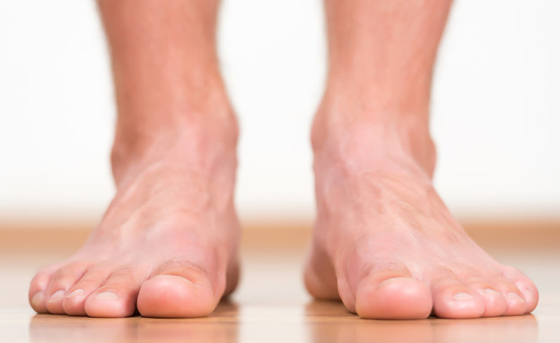
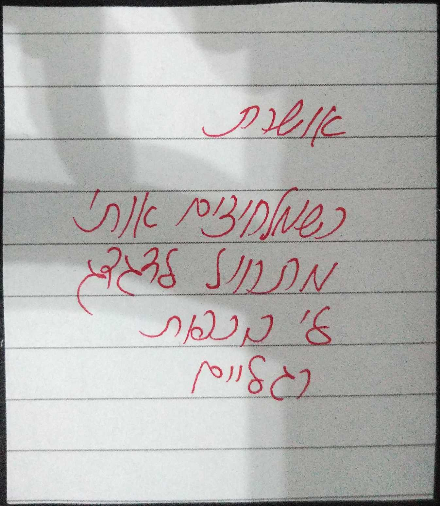
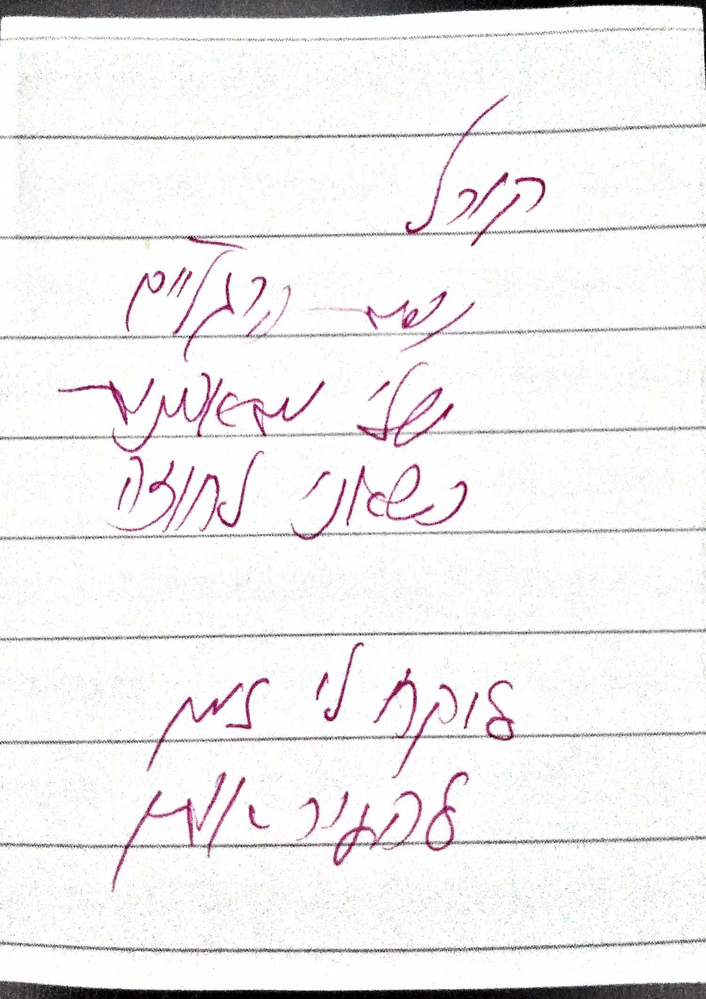

כפות רגליים
כף הרגל היא הפרק התחתון של הרגל בעלי חיים יבשתיים, מקבוצת החולייתנים. היא מצויה בין אצבעות כף הרגל לבין הקרסוליים. עליה רבים מבעלי החיים דורכים בזמן הליכה, אם כי יש כאלו שדורכים על אצבעות הרגליים או על אצבעות מנוונות.
לקריאה נוספת


